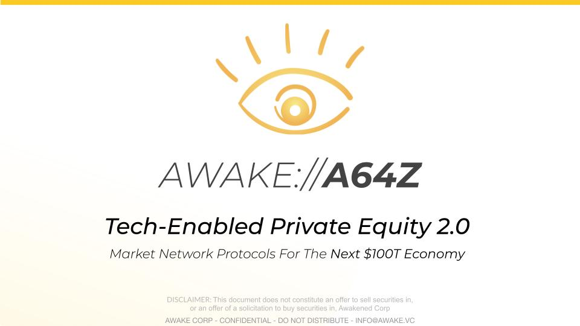
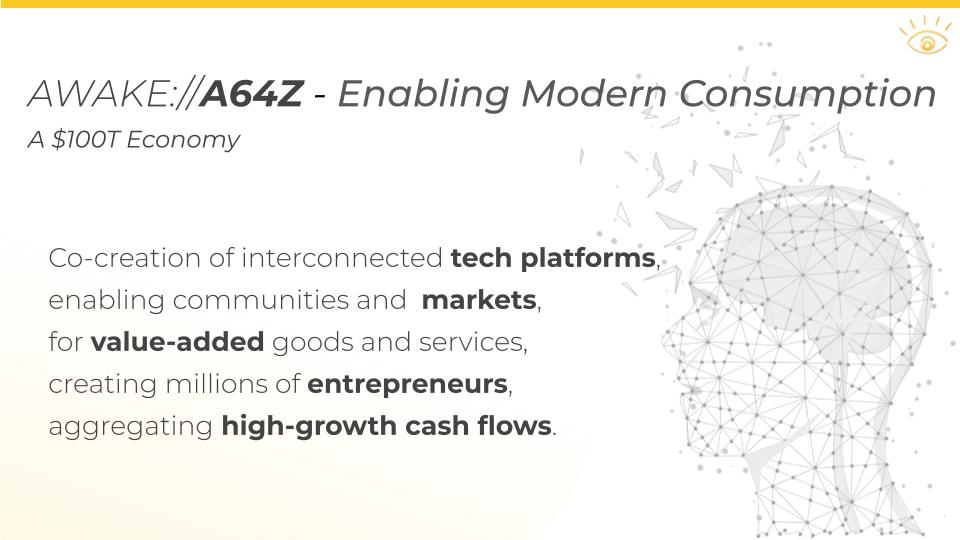
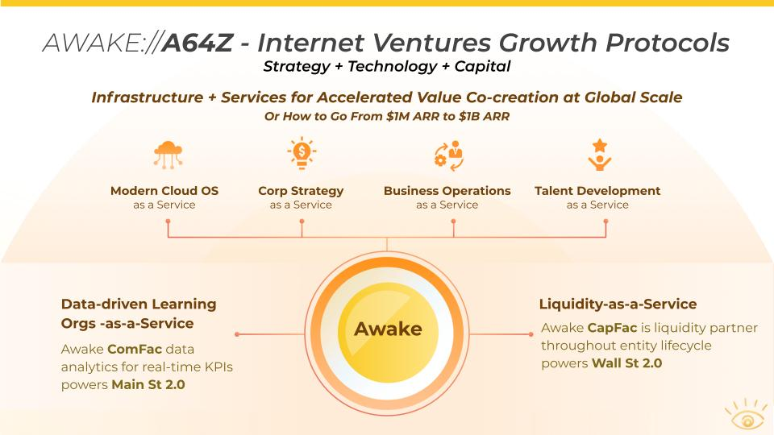

PE
PE
How to build Berkshire Hathaway 2.0? What is Private Equity and why don't people like PE types?
This question is not dissimilar from how to build Amazon if it were to be built from scratch today. Answer: not as a monolithic company but as an Ecosystems of interconnected companies. All the common technology would still be exposed as Amazon Web Services. A venture group would invest into companies built on top of their platforms. Rinse-and-repeat.

In today's world, things are a bit more complex with multiple Platform companies and multiple Blockchain companies that need to be integrated. So a tech-enabled private equity approach might be beneficial, particularly if an integration-first approach were to be coupled with a cash-flows-first approach on the business side.
Aka PE funds would not just bring capital but also a tech-first integration-focused playbook.
Awake has built a technology platform for private equity investment companies for increasing return on assets by leveraging Connections between everything and everyone and driving up efficiency as well as agility by creating an entirely digital and indeed virtual enterprise powered by FinTech and AI.

In the coming Internet 3.0 universe, the smartest private equity firms become Cosellers to any Business they’re invested in and act as ComFac and BankFac. Collaborative Value co-creation becomes the nature of any regenerativeMarket where they operate.

Awake offers the world of private equity players a means to become co-creators and enablers of the businesses they become involved in, and to redefine the meaning of shared private equity.
Awake has assembled the PE Operating System for Internet Ventures, it’s called a64, a seamlessly integrated foundation of all Awake Internet Protocols and PaaS Services.
Read more about the a64z Dragon Operating System.